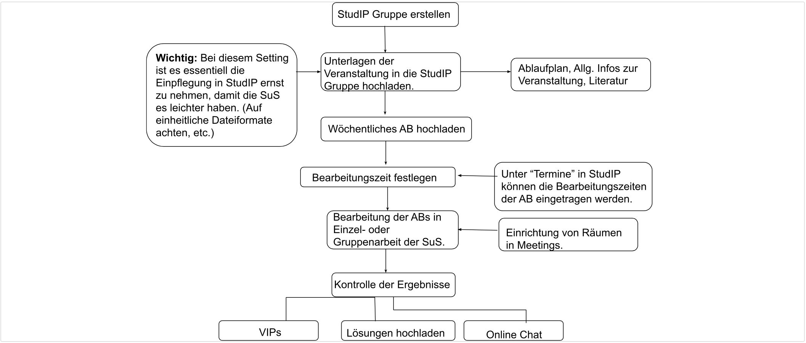

Online-Wochenplanarbeit
In den folgenden Ausführungen wird eine zumindest in technischer Hinsicht besonders niedrigschwellige Variante der Online-Lehre vorgestellt, um bestehende Seminarabläufe ohne größere technische Risiken in die Online-Lehre übertragen zu können. Dabei werden die wöchentlichen, gemeinsamen Erarbeitungsphasen eines Präsenzseminars durch eigenverantwortliche Arbeitsphasen und eine vorwiegend individuelle Rückmeldung ersetzt. Den Studierenden werden in Bezug auf ihr individuelles Zeitmanagement und ihre Selbstorganisation große Freiheiten eingeräumt. Dies erfordert eine hohe Eigenverantwortlichkeit und Selbstständigkeit der Studierenden. Sie können die unterschiedlichen Aufgaben und Texte in selbstgewählter zeitlichen Abfolge und Reihenfolge bearbeiten. Das hilft dabei den individuellen Lernstil auszubilden und im eigenen Lerntempo vorzugehen (Vgl. Methodenpool der Uni Köln: http://methodenpool.uni-koeln.de/wochenplan/wochenplan_begruendung.html).
Leitfaden:
- Erster Schritt: Vorbereitung Die Dozierenden laden in regelmäßigen Abständen (z.B. jede Woche) Materialien mit Aufgabenstellungen mit Abgabedatum (z.B. als pdf-Datei) hoch. Hier können auch Videos bereitgestellt oder Links zu Webseiten angeboten werden, anhand derer sich die Studierenden Inhalte erarbeiten. Es empfiehlt sich, für jede Themeneinheit einen eigenen Ordner anzulegen und diesen mit dem Datum zu versehen oder die Ordner durchgehend zu nummerieren.
Des Weiteren kann die Beschreibungsfunktion, welche während des Uploads einer Datei automatisch geöffnet wird, dazu genutzt werden, die Aufgabenstellung direkt mit dem Dokument zu koppeln. Im Sinne der Wochenplanarbeit können optionale Aufgaben gestellt werden, von denen sich die Studierenden je nach eigenen Interessen ein vorgegebene Anzahl für ihre Bearbeitung aussuchen können. Um sicherzustellen, dass Kerninhalte von allen bearbeitet werden, sind diese als verpflichtend zu kennzeichnen. Vorbereitend kann in jedem Themenordner auch ein Unterordner erstellt werden, in dem Studierende ihre individuellen Produkte (Texte, Bilder, Videos, Mindmaps…) hochladen können. Sinnvoll kann es sein, diese “Lösungsordner” so anzulegen, dass sie den Studierenden nur den Upload der eigenen, nicht aber den Download fremder Lösungen erlauben. In Stud.Ip erfolgt dies durch die Option “Ordner für Hausarbeiten”.
-
Zweiter Schritt: Bearbeitung Die Studierenden bearbeiten die gestellten Aufgaben in Einzelarbeit und laden ihre Ergebnisse im vorgegebenen Mindestumfang bis zum Upload des nächsten PDFs in den entsprechenden Hausarbeitenordner hoch. Sie bezeichnen ihre Lösungsdatei alle einheitlich mit ihrem Namen und der Aufgabennummer. Alternativ können auch Studierende kooperativ die Aufgaben lösen. Hierzu muss dann eine entsprechende Gruppeneinteilung vorgenommen werden. In StudIP kann die Einteilung in Gruppen unter dem Reiter “Teilnehmende” erfolgen. Hier kann eine entsprechende Anzahl an Gruppen mit beschränkter Teilnehmerzahl vorbereitet werden, in die sich die Studierenden selbst eintragen können. Die Zusammenarbeit der Studierenden kann z.B. über Video-Chat erfolgen (BBB oder Rocket.Chat).
-
Dritter Schritt: Rückmeldung Die Dozierenden überprüfen die Produkte der Studierenden und können so individuell Rückmeldung über die Arbeiten geben. Bei großen Veranstaltungen wird dies schnell unökonomisch. Hier kann die Rückmeldung durch Peer-Evaluation erfolgen. In diesem Fall müssen die Studierenden Zugriff auf die jeweiligen Lösungen der Kommilitonen haben, der Lösungsordner darf in diesem Fall also nicht als “Ordner für Hausarbeiten” angelegt werden. Für die Zuweisung der zu bewertenden Personen ist es hilfreich, die Gruppen in StudIP mit Nummern zu benennen. Es liegt im Ermessen der Dozierenden, Rückmeldungen nicht individuell, sondern pauschal zu geben.
-
Modifikationen Anstelle der Produkte kann der Lernerfolg auch über die Teilnahme an Online-Evaluationen sichergestellt werden.
Ablaufdiagramm
Dieses Ablaufdiagramm soll die Struktur der Online-Wochenplanarbeit erklären 